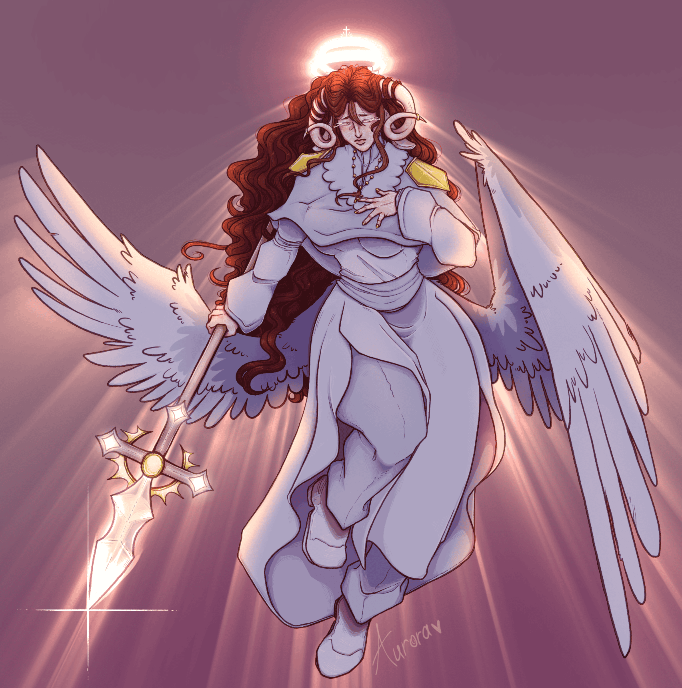
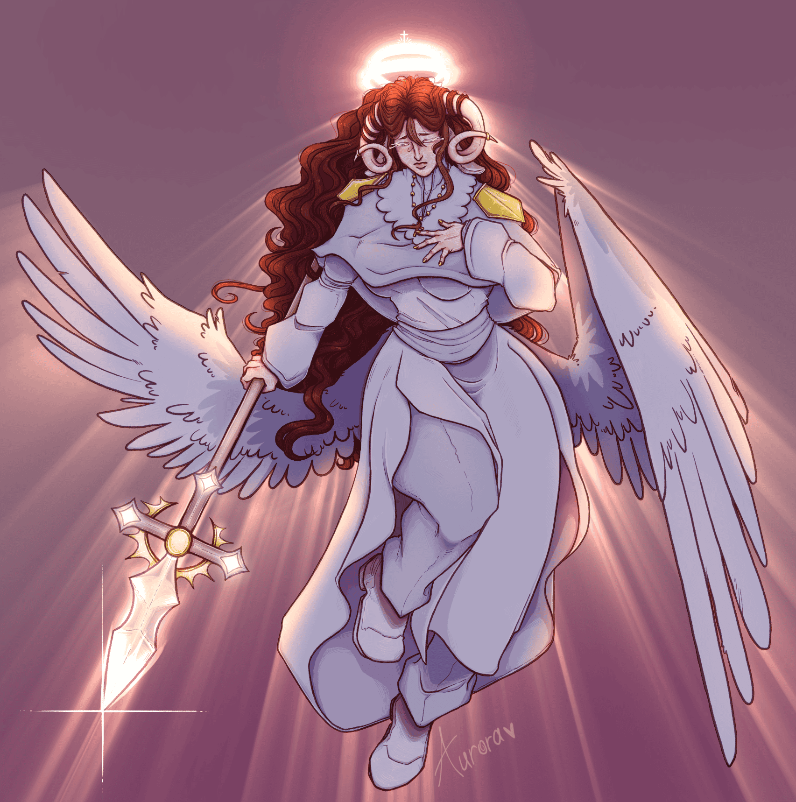

Kao sto vec znate, ime mi je Mara. Rodena sam u Novoj Biloj u BIH te se kasnije preselila u Zadar.
Tamo sam provela ostatak svog zivota dok nisam otisla u Zagreb na fakultet. Danas idem na Graficki fakultet i moram priznati, vrlo je zanimljiv.
Sto se tice mojih interesa, po predlozenim slikama mozete vidjeti da volim slusati glazbu, najvise volim bend Sleep Token.
Najdraze igrice koje trenutacno igram su: Wuthering Waves (Wuwa), Baldurs gate 3, Minecraft.
Volim crtati, pisati, ali takoder u zadnje vrijeme pronalazim gust u izradivanju videa.
 
